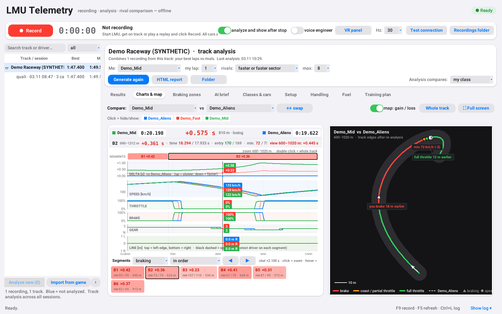
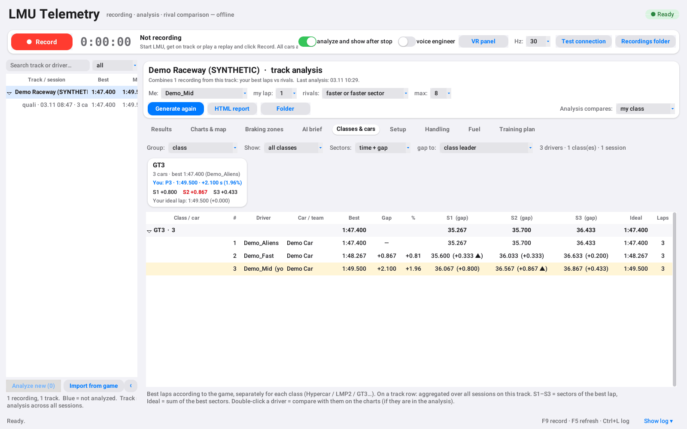
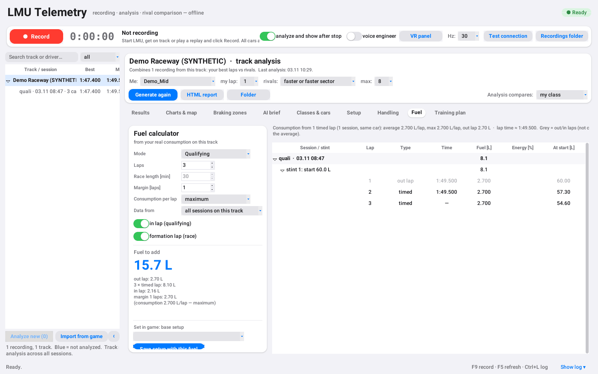
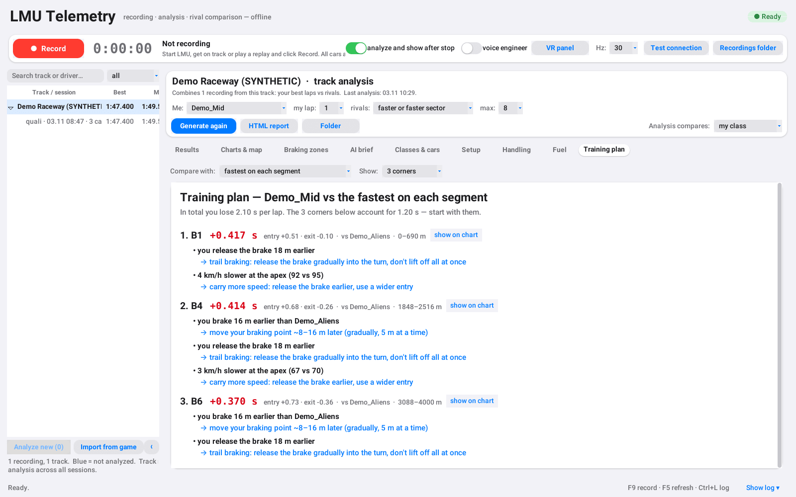
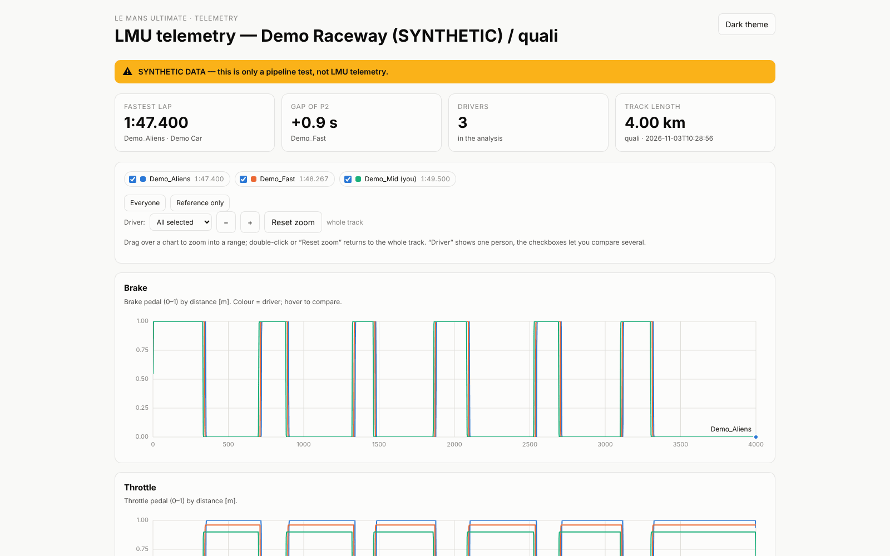

An offline telemetry tool for Le Mans Ultimate. It records every car on track from the game's shared memory and compares your laps with your rivals': braking points, throttle pickup, apex speed and racing line, corner by corner.
All screenshots use the bundled synthetic demo session, not real player data.
Pure Python standard library and tkinter. No server, no account, nothing leaves your PC.
Throttle, brake, steering, gear, speed and position of all cars in the session, live or from an in-game replay.
Time delta by distance, per-segment gain/loss, braking zones and a dark corner view with both racing lines.
Best laps per class, gap to the class leader, sector times and your ideal lap.
Real consumption per lap from your recordings; fuel for qualifying, timed or lap races, and a setup saved with that fuel.
The corners where you lose the most, why (braking, coasting, apex speed, line) and what to try next.
Setup snapshots per lap and comparisons; understeer/oversteer, load transfer, tyres and ride height per corner phase.
Lap time, gap to your best and fuel laps read out after every lap, plus a VR panel for OpenKneeboard.
Converts LMU's built-in DuckDB telemetry into recordings, so sessions you didn't record still show up.
Click any image for full size.





Windows + Python 3.11 or newer. No pip install needed (DuckDB is only for the optional game import).
git clone https://github.com/marekwolny/LMU-LoadTelemetry
cd LMU-LoadTelemetryIn the game: Settings → Gameplay → Enable external plugins = on.
Double-click START_LMU_TELEMETRY.cmd, or run:
pythonw lmu_app.pyGet on track (or play a replay at 1×) and press ● Record or F9. Press it again to stop; the session is analysed and opens on the right.
python record.py --probe-seconds 10
python record.py --out records --hz 30
python analyze.py records/*.csv.gz --out analysis --top 6python make_demo.py --out records_demo
python analyze.py records_demo/*.csv.gz --out analysis_demoOptional game-telemetry import: python -m pip install duckdb
Full documentation is in the README (Polski). The tool only reads LMU's official shared memory: it does not inject code, modify the game or touch EAC.
LMU LoadTelemetry is a free hobby project. If it helped you find a few tenths, a coffee keeps it going.
☕ Buy me a coffee